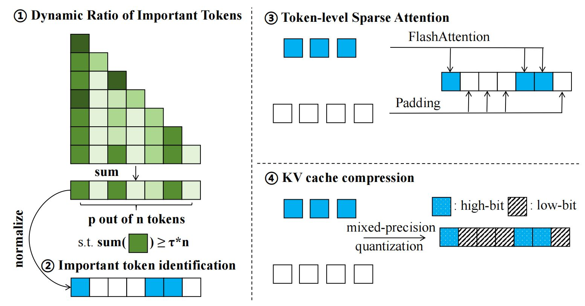

In this paper, we present ZipVL, an efficient inference framework designed for LVLMs that resolves both computation and memory bottlenecks through a dynamic ratio allocation strategy of important tokens. This ratio is adaptively determined based on the layer-specific distribution of attention scores, rather than fixed hyper-parameters, thereby improving efficiency for less complex tasks while maintaining high performance for more challenging ones.
Then we select important tokens based on their normalized attention scores and perform attention mechanism solely on those important tokens to accelerate the prefill phase. To mitigate the memory bottleneck in the decoding phase, we employ mixed-precision quantization to the KV cache, where high-bit quantization is used for caches of important tokens, while low-bit quantization is applied to those of less importance.
Our experiments demonstrate that ZipVL can accelerate the prefill phase by 2.6× and reduce GPU memory usage by 50.0%, with a minimal accuracy reduction of only 0.2% on Video-MME benchmark over LongVA-7B model, effectively enhancing the generation efficiency of LVLMs.
Overview of the proposed ZipVL framework during the prefill phase. Here, τ represents the threshold for retaining attention scores, n and p are the total number of tokens and the number of important tokens, respectively. After determining the ratio of important tokens and identifying them, we optimize the prefill phase by exclusively computing attention for important tokens. Additionally, we apply mixed-precision quantization to the KV cache, where the KV cache of less important tokens is quantized to a lower bit-width.
@article{he2024zipvl,
title={ZipVL: Efficient Large Vision-Language Models with Dynamic Token Sparsification and KV Cache Compression},
author={He, Yefei and Chen, Feng and Liu, Jing and Shao, Wenqi and Zhou, Hong and Zhang, Kaipeng and Zhuang, Bohan},
journal={arXiv preprint arXiv:2410.08584},
year={2024}
}